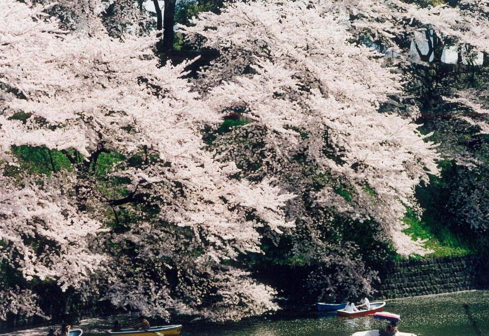
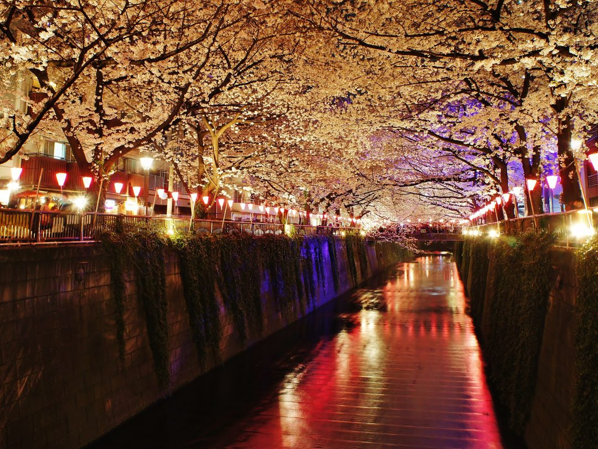
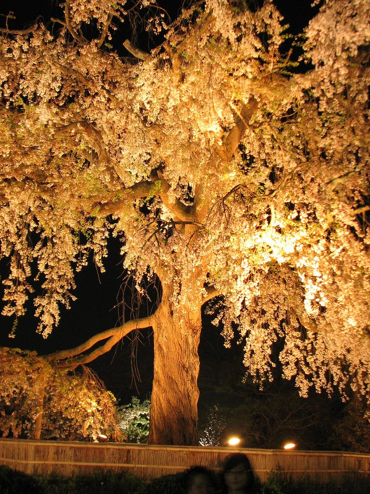
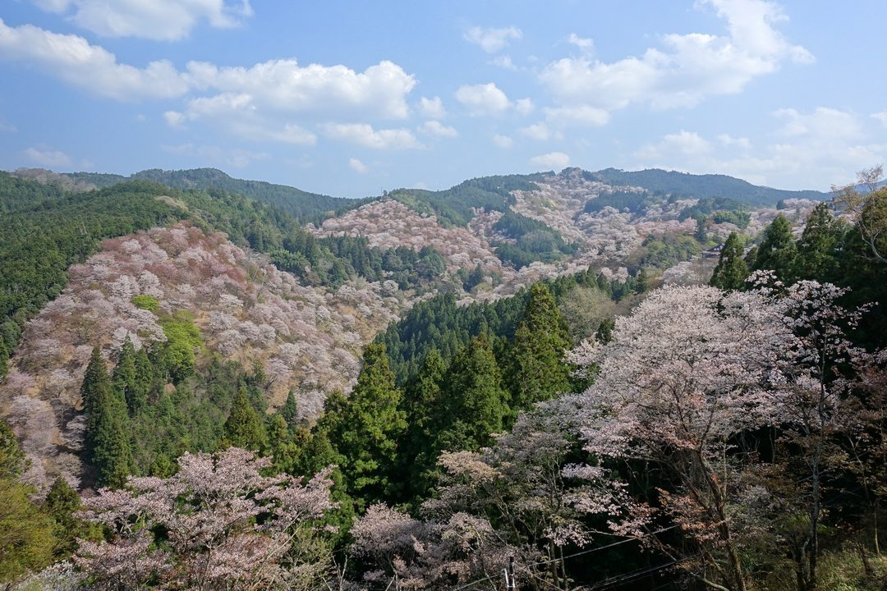
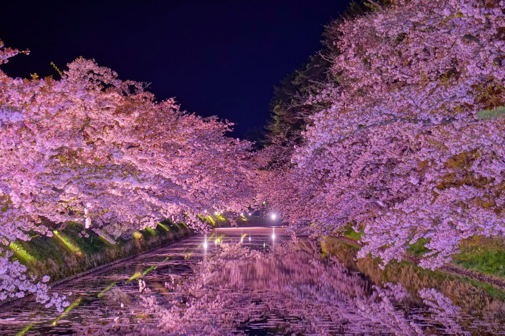

CHERRY BLOSSOM
★ ＴＯＰ ５ ★
Chase the bloom from Tokyo's lantern-lit moats up to a castle in the snowy north — five hanami crowns.
Tap a place to book a tour or ticket. Some links are affiliate links — they cost you nothing & keep these guides free. 🙏

NO.1
02

Meguro River 目黒川
~800 cherry trees line the canal, branches meeting over the water; lanterns light the blossoms after dark. Late Mar–early Apr.
🎫 Tours & tickets ›
03

Maruyama Park 円山公園
Home to the ~12m Gion Shidarezakura weeping cherry, illuminated nightly, beside Yasaka Shrine. Late Mar–early Apr.
🎫 Tours & tickets ›
04

Mount Yoshino 吉野山
~30,000 cherry trees bloom in tiers up the slopes, staggering the season into a month-long relay. Early–late Apr by elevation.
🎫 Tours & tickets ›
05

Hirosaki Castle Park 弘前城公園
~2,600 cherry trees frame the castle and moats, famed for floating 'petal-carpet' blossoms and night light-up. Late Apr–early May.
🎫 Tours & tickets ›🛂 Planning your trip? Get my done-for-you Japan visa help ›
✈️ Before you go
Some links are affiliate links — booking through them costs you nothing and keeps these guides free. 🙏
Photos: free-license / CC (Wikimedia · Unsplash · Pexels) — placeholder stock; final = shop-supplied.